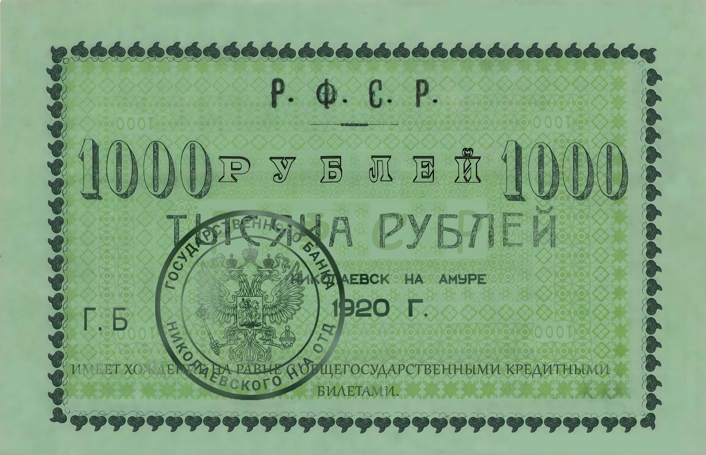
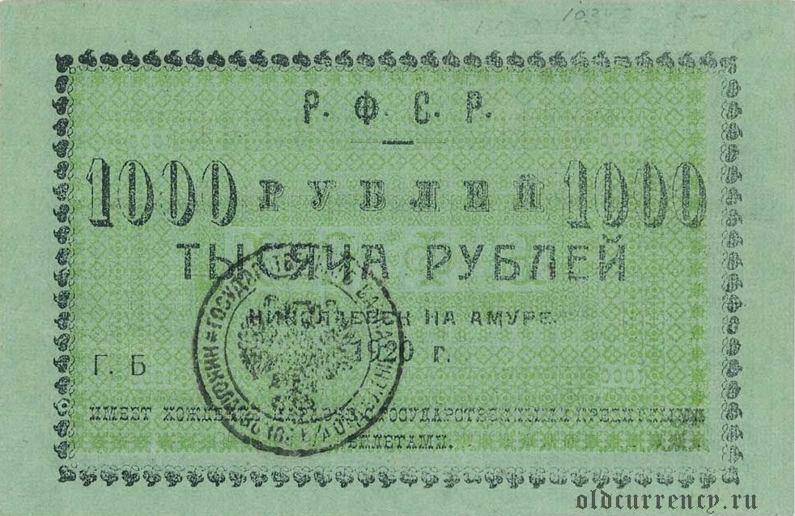
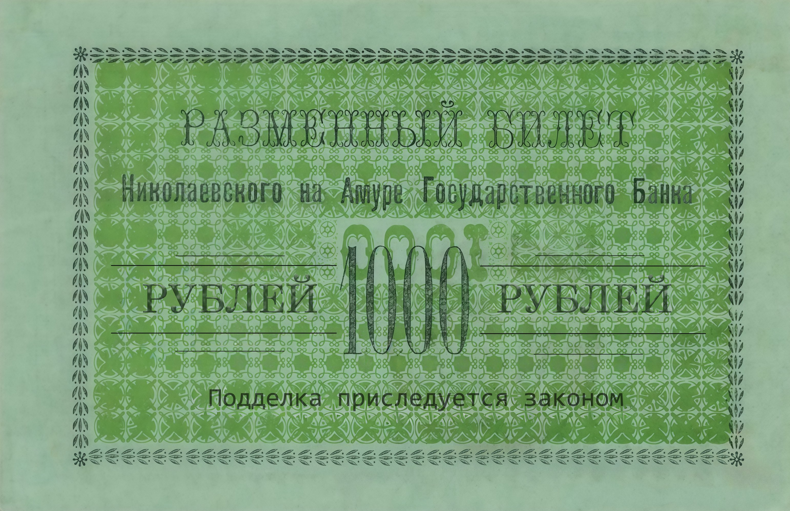
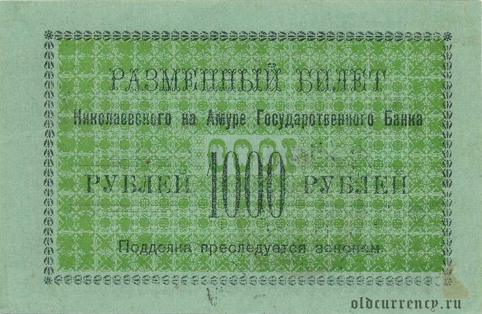

Это вам не нейронка! Ручной труд!


⇔ Перетащите ползунок для сравнения


⇔ Перетащите ползунок для сравнения
Надписи «Николаевск на Амуре», «1920 Г.» и мелкий текст стали читаемы — восстановлен контраст и резкость каждой буквы.
Удалены пятна, загрязнения и артефакты хранения. Светло-зелёный фон купюры восстановлен до первоначального тона.
Декоративная рамка и внутренний орнамент полностью восстановлены — видны все детали гильошного узора.
Круглая печать «Государственного Банка Николаевского отделения» с двуглавым орлом восстановлена в деталях.